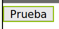
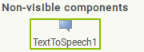
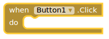
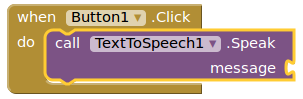
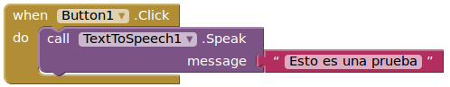
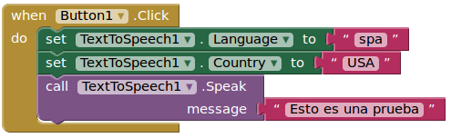
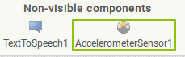
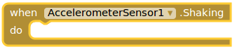
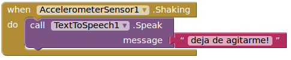

El móvil que habla
Objetivos
- Aprender alguna de las capacidades multimedia de AppInventor como el sintetizador de voz
- Aprender alguno de los sensores de AppInventor como el acelerómetro
Un botón que habla
Creamos un nuevo proyecto en AppInventor llamado "Hablame".
Insertamos un botón (Button1) y le ponemos estas propiedades:
- Fontsize:24
- Text:Prueba

Ahora, de la paleta de componentes, del apartado "Media", inserta en el programa un objeto "TextToSpeech". Verás que es un componente no visible y por eso lo pone debajo de la pantalla principal de la aplicación.

Ve al modo de programación de bloques (opción "Blocks").
Click sobre el "Button1" y arrastra la instrucción para hacer click sobre él:

Click sobre el "TextToSpeech1" y arrastra el procedimiento para que hable (speak):

Click sobre "Text" para crear una cadena de texto que sea "Esto es una prueba" y ponla en el procedimiento "speak".

Ya podemos probar nuestro programa en el móvil conectándolo con el AI companion. cuando pulsemos al botón se oirá el mensaje "Esto es una prueba".
Ampliación
Si consultas la información del sintetizador de voz de AppInventor en http://ai2.appinventor.mit.edu/reference/components/media.html#TextToSpeech, verás que se pueden cambiar algunos atributos como el lenguaje o el país.
Vamos a asegurarnos que el lenguaje que utiliza nuestro sintetizador es Español (código "spa"), pero vamos a probarlo con la entonación de los USA (código "USA"). Para ello haz click en el panel "Blocks" sobre "TexToSpeech1" y añade esto:

También puedes probar a escribir un mensaje en inglés, poner el idioma en inglés (código "eng") y ver la diferencia entre la pronunciación de Gran Bretaña (código "GBR") y USA (código "USA").
Ampliación
Modificar el programa anterior para que tenga varios botones y cuando se haga click sobre cada uno de ellos se escuche un mensaje diferente, por ejemplo:
- Hola
- Adiós
- Tengo ganas de que acabe la clase
Cada botón debe tener el texto del mensaje que va a reproducir.
Actividad: Shaking it baby!
Vamos a conseguir que nuestro móvil hable cuando lo agitemos.
Para ello, usamos el programa anterior o cualquiera de sus ampliaciones. En el apartado "Designer" añadimos un componente nuevo del apartado "Sensors" que se llama "AccelerometerSensor". Observarás que es un componente no visible.

Pasamos al apartado "Blocks" para programar. Click sobre "AccelerometerSensor1" para ver sus bloques de programación y arrastramos el que permite realizar una acción cuando lo estemos agitando (shaking):

Y hacemos una llamada al procedimiento "Speak" de "TextToSpeech1", con el mensaje que deseemos que suene cuando agitemos el móvil:

Y ya podemos probar nuestro programa. ¡Agita tu móvil y escucha!
Obra publicada con Licencia Creative Commons Reconocimiento No comercial Compartir igual 3.0

Programando en AppInventor por Francisco Nevado Montero se distribuye bajo una Licencia Creative Commons Atribución-NoComercial-CompartirIgual 4.0 Internacional.